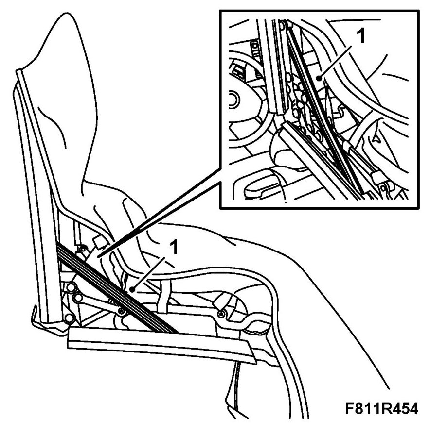
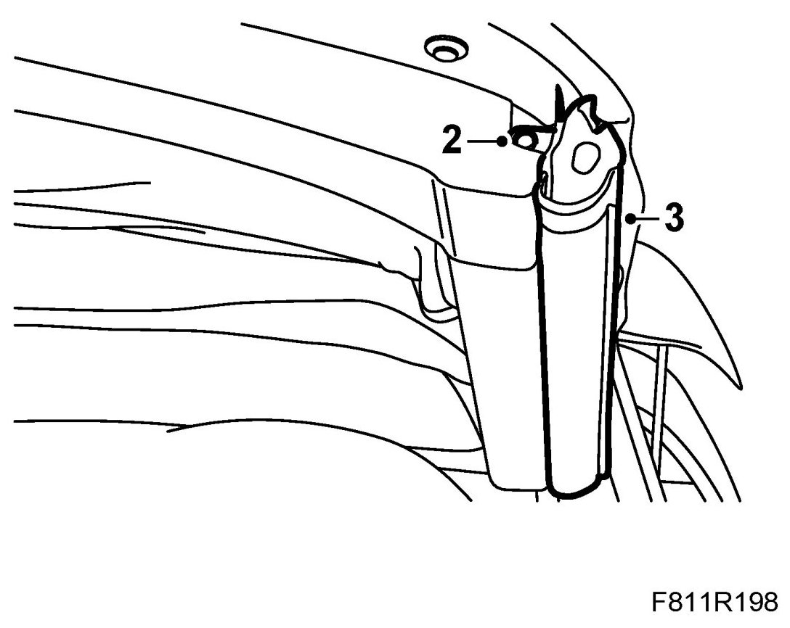
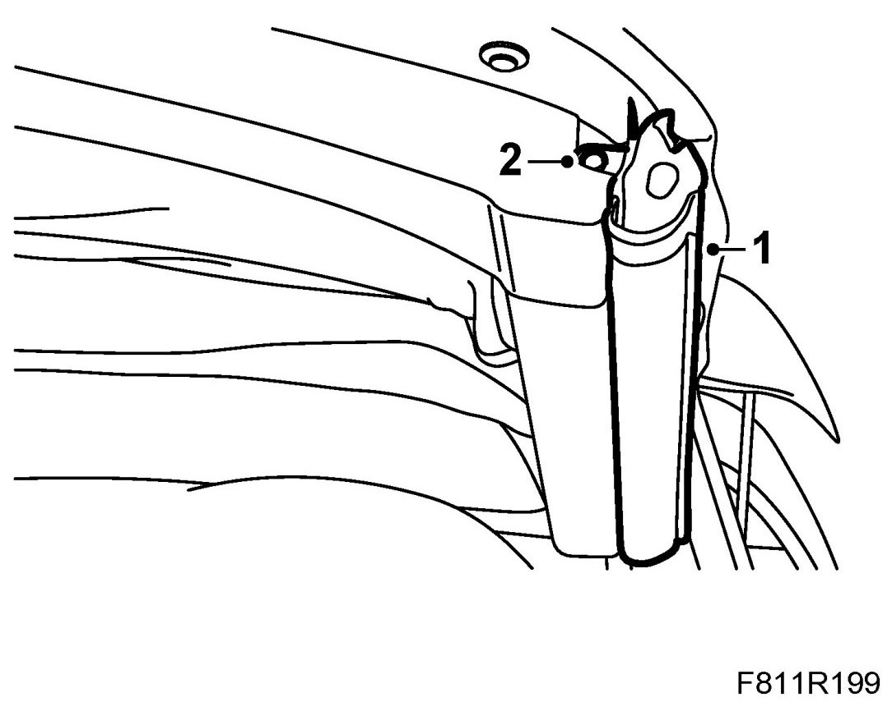

Front Rail Side Seal
Front Rail Side Seal
Removing
1. Operate the soft top half way down and secure it with 82 93 847 Soft top support.

2. Remove the screw from the seal attaching lug.

3. Remove the seal. Start by loosening it at the bottom.
Fitting
1. Put the seal in mounting position and press it onto the front rail attaching profile.

2. Fit the screw on the seal attaching lug.
3. Remove the soft top support and close the soft top.